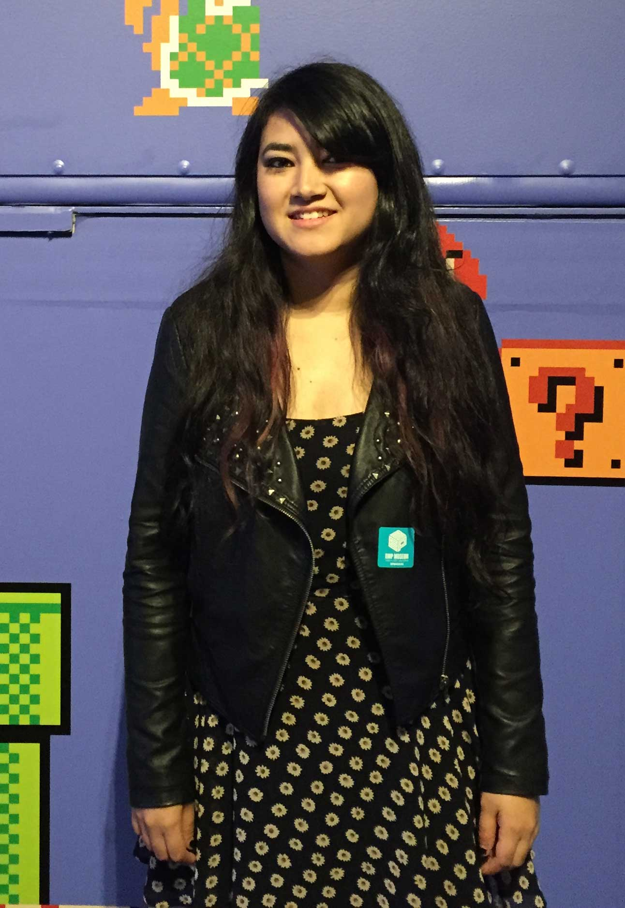

About Me
Hi, I’m Sophia.
I’m passionate about creating. Ever since I was little, I’ve been creating things. I started with tiny chairs and play things from wood scraps leftover from my dad’s construction jobs, moved to clothes, crafts, and short films in high school, and now to games and digital products as an adult. Games and apps give me the opportunity to create beautiful, meaningful, interactive products that connect me to others. No matter the medium, the act of creating stirs up something way deep down in my gut.
I’m passionate about learning. I want to be a life-long learner and I have a seemingly endless list of subjects to study and skills to practice. More importantly, I am interested in how we choose to teach, how effective our educational methods are, and how we can use technology to view the education issue from a new perspective. I grew up below the poverty line and I later found out that the schools in my area were severely lacking, especially in extra-curricular material. I know we can change that. Using alternative avenues for learning and embracing technology, our future generations can be as intellectually equipped as possible.
I want to make an impact on the world around me. Okay, I know this one’s cheesy, but it’s absolutely true. What good is creating and learning awesome things if I’m not sharing them with people? I hope to create products that truly enhance people’s lives. Right now I’m working on being the best version of me, so I can contribute in the most effective way — every year I strive to be a more awesome version of myself than the year before. I don’t do ‘good enough’. If I go for something, it’s with the force of a tidal wave. To me, ‘impossible’ is a motivational word.